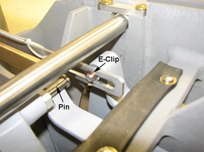
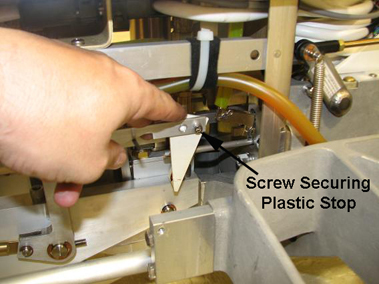
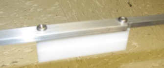

Operating Documentation
Direction 5500113, Rev# 3
Discovery MR750 3.0T Service Methods
Module Version 2.0, Version Date 9/9/10
Operating Documentation |
| Required Persons | Preliminary Reqs | Procedure | Finalization |
|---|---|---|---|
| 1 | Not Applicable | 60 mins | Not Applicable |
| Item | Qty | Effectivity | Part# | Manufacturer | |
|---|---|---|---|---|---|
| Nonmagnetic Tool Kit | 1 | - | 5112581 | - | |
| Item | Qty | Effectivity | Part# | Manufacturer | |
|---|---|---|---|---|---|
| Pedal Link Bar Connector | 1 | - | Refer to FRU manual. | - | |
| Rod Link Connector | 2 | - | Refer to FRU manual. | - | |
| Shaft Rocker | 2 | - | Refer to FRU manual. | - | |
| Rocker Clamp | 2 | - | Refer to FRU manual. | - | |
| ||||
| Personal injury | ||||
| Severe injury can occur if the table is accidentally lowered during maintenance. | ||||
| when performing maintenance with the table in the up position, make sure the lock bar is engaged. |
The following procedure describes how to remove and replace the Pedal Link Bar Connector that operates the foot pedal to dock the patient table.
Undock the patient table from the magnet, and remove it from the Magnet Room.
Remove the two screws that fasten the left and right Lower Base Side Covers to the table.
Illustration 1: Patient Table Covers (Left Side Shown)

Remove both the left and right Lower Base Side Covers by lifting up and pulling out to release the Velcro® securing each to the Bellows. For more information, refer to Patient Table Upper and Lower Base Side Cover Removal.
Remove the four screws (shown below) that secure the Rear Base Cover to the table base and the bellows.
Illustration 2: Screws Securing Rear Base Cover

Raise the Patient Table to the maximum height.
Lower the table Lock Safety Bar shown below. Lower the table and verify that all weight is resting on the lock bar.
Illustration 3: Table Lock Safety Bar

Remove the spring (shown below) attached to the Pedal Link Bar Connector at the rear of the patient table.
Illustration 4: Spring Removal

Remove the E-clip that secures the Pedal Link Bar Connector to the pedal that electrically docks the patient table.
Illustration 5: Pin Removal from Pedal Link Bar Connector

Remove the screw from the Plastic Stop (shown below) on the Pedal Link Bar Connector.
Illustration 6: Screw on Plastic Stop

When the new Pedal Link Bar Connector is installed, verify that the plastic stop is adjusted to remove any excess movement in the electrical docking mechanism. Ensure this adjustment does not prevent the docking mechanism from fully engaging.
| NOTE: | The electrical docking foot pedal should demonstrate a full range of motion without excess movement in the docking mechanism. |
Pull the Link Down Bar (shown below) up to allow access the Pedal Link Bar Connector. Push and remove the pin (shown in Illustration 5) from the Pedal Link Bar Connector.
Illustration 7: Link Down Bar

Remove the two screws securing the Block Lift (shown below) to the Pedal Link Bar Connector.
| NOTE: | Save the two screws and the Block Lift for installation on the replacement Pedal Link Bar Connector. |
Illustration 8: Block Lift on Pedal Link Bar Connector

Install the new Pedal Link Bar Connector by reversing the above steps.
The following procedure explains how to remove and replace the defective rocker clamp, rod link connector or short rocker on the patient table.
Undock the patient table from the magnet, and remove it from the Magnet Room.
Remove the two screws that fasten the left and right Lower Base Side Covers to the table. (See Illustration 1.)
Remove both the left and right Lower Base Side Covers by lifting up and pulling out to release the Velcro® securing each to the Bellows. For more information, refer to Patient Table Upper and Lower Base Side Cover Removal.
Raise the patient table to the maximum height.
Lower the table Lock Safety Bar. Lower the table and verify that all weight is resting on the lock bar. (See Illustration 3
Remove the spring and the pin on the defective Rod Link Connector. (See illustration below.)
Illustration 9: Spring and Pin on Rod Link Connector

Remove the inner E-clip and the back portion of the Link Rod Connector as shown.
Illustration 10: Rock Link Connector Removal

Remove the two E-clips securing the defective Shaft Rocker to the front of the Link Rod Connector, and remove the Shaft Rocker.
Illustration 11: E-Clips on Shaft Rocker

Remove the front portion of the defective Rod Link Connector shown in Illustration 10.
At this point, if one of the Rocker Clamps (shown below) requires replacement, remove the two E-clips securing it to the table base.
Illustration 12: Rocker Clamp Removal

Replace each of the parts described in this section by reversing the above steps.
Verify proper patient table operation with Operator Console.